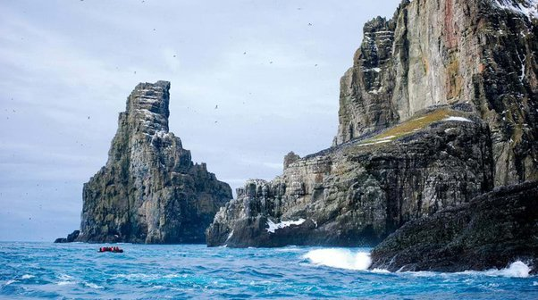

How to Train Your Dragon
By - Vedant Barot
The first movie in the HTTYD trilogy was released March 26, 2010. Following this movie, 2 shows and 2 more movies would be released with the last film in 2019, marking the end of this decade long trilogy.
The trilogy is placed around the life of a troubled, misfit teen (Hiccup) from the island of Berk. His inability to fight dragons seperates him from the rest of his society, despite the fact that his father (Stoick) is the chief of the tribe. Hiccup is placed in dragon fighting school where he manages to reach the top of his class due to his unexpected friendship with an elusive nightfury (Toothless). This connection with the dragon allows him to learn the true nature of these reptiles and brings him to the conclusion that the centuries long conflict between man and beast is pointless.
The summary of the first movie is simply just a start in a decade long trilogy where Hiccup leads his team of dragon fliers on adventures for the good of both Viking and dragon kind.
The nostalgic soundtracks in these movies are the work of John Powell. The main characters in the movies are voiced by many well known celebrities such as Jay Baruchel (Hiccup), Gerard Butler (Stoick the Vast), America Ferrera (Astrid), Kristen Wiig (Ruffnut), T.J. Miller (Tuffnut), Jonah Hill (Snotlout) and Craig Ferguson as (Gobber) to name a few.
The fictional island of Berk is based of a real inhabited island located in Staffa, Scotland. The island is a historically accurate location as those islands were the first place the Vikings inhabited and the last place they left.
